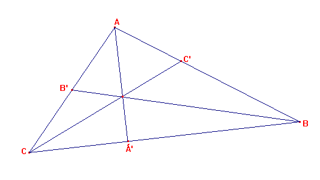
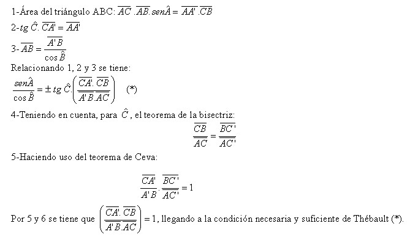

| Problema 292: Mostrar que la condición necesaria y suficiente para que la altura AA', la mediana BB' y una de las bisectrices del ángulo C de un triángulo ABC sean concurrentes es que sen A /cos B = + o - tang C. Thébault, V. (1949): Mathematics Magazine. Vol. 23, No. 2, Nov. - Dec., 1949, p. 103 . |
Solución de: Correa Pablo Ariel. Profesor del Colegio del Centenario. Buenos Aires, Argentina.

